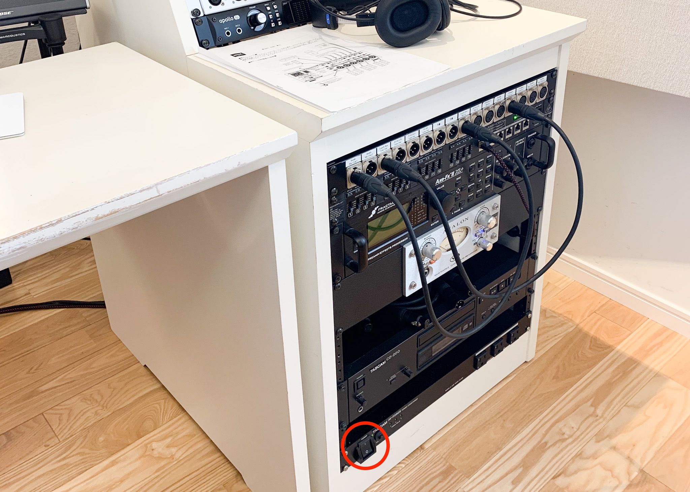
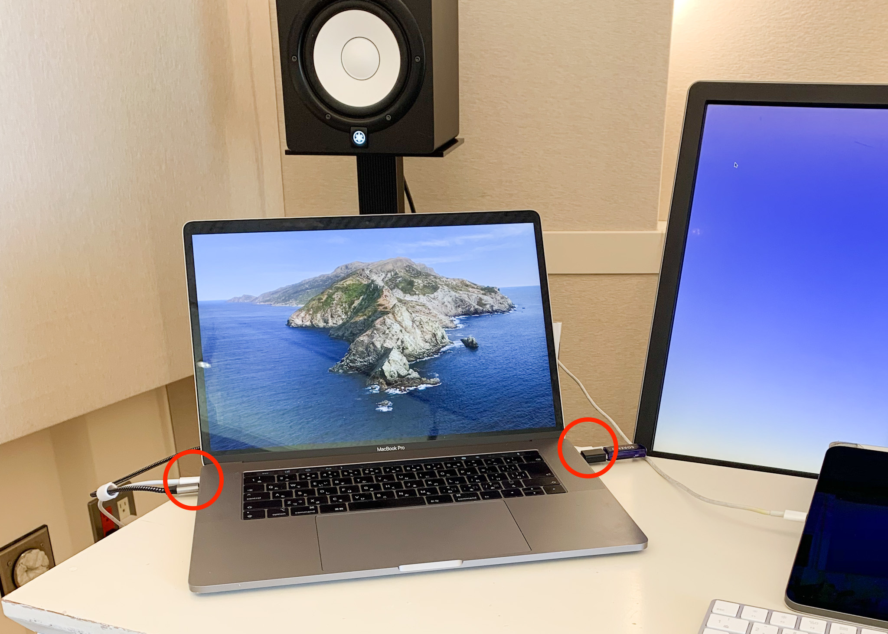
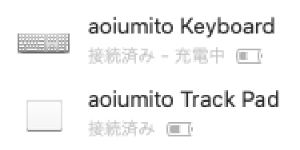

FAQs
Zoom立ち合いで収録様子をみせたいときは？
soremoapple@icloud.comへ招待メール。
スタジオモニタールームのiPadに通知がいくので、そのまま立ち上げておけばOKです。
収録の際は、相手の声がマイクに入らないよう、iPadのボリュームをミュートするようご留意ください。
ひとりで収録したいときはどうする？
sidecarでiPadをディスプレイとし、直接DAWを操作するのがおすすめです。
（右）ラック右下で全電源をつけます。 
（左）テレビ・エアコンのリモコンは、左棚の２段目にあります。
※全てUSB3接続です。

変換パーツは、左棚の棚の中に各種揃えていますので、ご利用ください。
オプショナルですが、MacのKeyboardとTrackPadは、置いています。Bluetoothで接続ください。

soremoapple@icloud.comへ招待メール。
スタジオモニタールームのiPadに通知がいくので、そのまま立ち上げておけばOKです。
収録の際は、相手の声がマイクに入らないよう、iPadのボリュームをミュートするようご留意ください。
sidecarでiPadをディスプレイとし、直接DAWを操作するのがおすすめです。